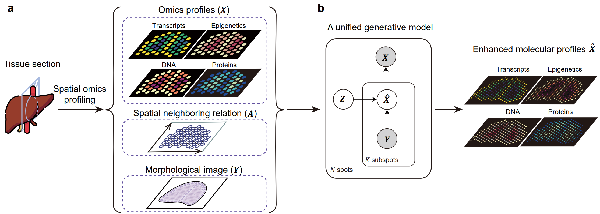
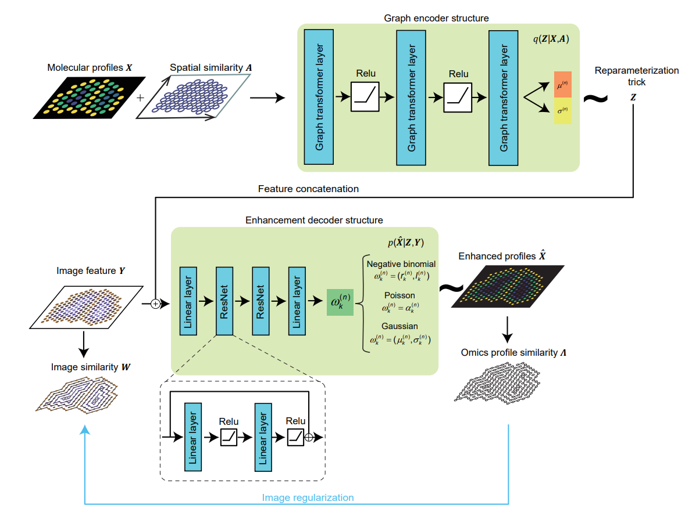

Spatial omics scope (soScope) is a unified generative framework designed for enhancing data quality and spatial resolution across various omics types obtained from diverse spatial technologies.
Spatial Omics technologies are transforming the way to study tissue structures and offering valuable insights across various biological areas. However, there remain two challenges in the field. Firstly, tissues are often in frozen or formalin-fixed and paraffin-embedded (FFPE) states before sequencing, potentially impacting molecular states and reducing sequencing accuracy. Secondly, most spatial technologies utilize spatial barcodes at the tissue spot resolution, limiting spatial resolution in tissue structure.
To address these challenges, we introduce spatial omics scope (soScope), a generative framework that enhances spatial resolution and data quality by modeling spot-level profiles from diverse spatial omics technologies. SoScope views each spot as an aggregation of "subspots" at an enhanced spatial resolution, integrating omics profiles, spatial relations, and high-resolution morphological images through a multimodal deep learning framework, enabling accurate modeling and reduction of variations in diverse spatial omics types.

Fig. 1 | An overview of the study. (a) The soScope framework. soScope integrates molecular profiles (), spatial neighboring relations (), and morphological image features () from the same tissue using a unified generative model to enhance spatial resolution and refine data quality for diverse spatial omics profiles. (b) The probabilistic graphical model representation of soScope. Each of the spots in the spatial data is considered an aggregation of subspots at a higher spatial resolution. The subspot omics profile () depends on both the latent states () at the spot level and image features () at the subspot level. The observed profile is obtained by summing profiles from its subspots.

Fig. 2 | The model architecture of soScope. The model includes three parts: Firstly, at the spot resolution, omics profile (), and their spatial neighboring relations () are encoded by a 3-layer graph transformer and mapped to parameters ( and for spot ) defining the latent distribution for . Spatial states are sampled via the reparameterization trick. Secondly, at the subspot resolution, image patches from subspot regions are converted into deep features and concatenated with the spot representation . Thirdly, the combined input is mapped to distribution parameters for subspots’ profiles through two sequential ResNet blocks. Here, represents likelihood parameters for the -th subspot enhanced from the -th spot, which is determined by the omics type . An additional image regularization term is used to encourage the consistency between enhanced profile similarity () and morphological similarity () at the subspot level (blue line).
soScope requires the following packages for installation:
All required python packages can be installed through pip/conda command.
To install soScope package, use
xxxxxxxxxx11git clone https://github.com/deng-ai-lab/soScopeBy running image_inception.py on image patches, users can get 2048-dimensional image feature () .
By running BuildGraph.py on spatial profiles and image feature, users can get spatial neighboring relations () and morphological similarity () in coordinate format.
After installation, import soScope by
xxxxxxxxxx21from soScope_model.train import two_step_train # for model training2from soScope_model.inference import infer # for enhanced profiles inferencesoScope requires spatial profiles (), spatial neighboring relations ( , a sparse matrix in coordinate format) , image features (), and image similarity matrix ( , a sparse matrix in coordinate format) for model training. All of these data should be provided in data_dir. After optimization, the soScope model is saved in saved_model.
xxxxxxxxxx121saved_model = two_step_train(logging,2 vgae_experiment_dir,3 soScope_experiment_dir,4 data_dir,5 vgae_config_file,6 soScope_config_file,7 device,8 checkpoint_every,9 backup_every,10 epochs,11 num_neighbors=412 )where
xxxxxxxxxx161Args:2logging: not None to log the summary in the training process.3vgae_experiment_dir: saving directory for pre-training stage.4soScope_experiment_dir: saving directory soScope training.5data_dir: dataset directory contains necessary data mentioned above.6vgae_config_file: model configuration for variational graph auto-encoder used in pre-training stage.7soScope_config_file: model configuration for soScope.8device: 'cuda' or 'cpu'9checkpoint_every: save the model in each check point.10backup_every: update the model in each backup point.11epochs: training epoches.12num_neighbors: edges are built between every neighboring {num_neighbors} nodes, not to be revised. num_neighbors=6 for Visium and num_neighbors=4 for other platforms.1314Returns:15Optimized soScope model.16
After optimization, users can directly get enhanced spatial profiles.
xxxxxxxxxx91infer(2 experiment_dir,3 non_negative,4 num_neighbors,5 data_dir,6 result_dir,7 device,8 saved_model9)where
xxxxxxxxxx111Args:2experiment_dir: saving directory for inference stage.3non_negative: True to make the enhanced profiles not negative.4num_neighbors: edges are built between every neighboring {num_neighbors} nodes, not to be revised. num_neighbors=6 for Visium and num_neighbors=4 for other platforms.5data_dir: dataset directory contains necessary data mentioned above.6result_dir: saving directory for results.7device: 'cuda' or 'cpu'8saved_model: optimized soScope model for resolution enhancement.910Returns:11Enhanced spatial profiles saved as {result_dir}/infer_subspot.npy
We provide Jupyter Notebooks (see soScope_demo) for the demonstration of applying soScope on the negative binomial distribution, Poisson distribution, Gaussian distribution, and joint distribution for spatial multiomics. The demonstration includes:
We take the Jupyter Notebooks soScope_demo/soScope_demo_NB.ipynb as an example to explain the soScope settings.
369 “low-resolution” spots with aggregated gene expressions (X), morphological image features generated from a pretrained Inception-v3 model at high resolution (Y), and spatial neighboring relations (A). Genes analyzed: MT1G, FABP1, EPCAM in the epithelium region; CNN1, MYH11, TAGLN in the muscularis region; PTPRC, HLA-DRA, CD74 in the immune region.
vgae_config_file:
xxxxxxxxxx301trainerVGAETrainer_NB 2# We adopt the negative binomial distribution as the prior distribution to pretrain the graph encoder.34params5 # Number of analyzed genes6 gene_dim97 8 # Number of subspots in each spot9 sub_node710 11 # Dimension of image features12 sub_dim204813 14 # Dimension of latent states15 z_dim12816 17 # Optimizer name18 optimizer_name'Adam'19 20 # A hyperparameter indicating the variarance of X.21 scale1022 23 # Learing rate24 lr0.00_125 26 # Beta is the weight of KL divergence. We offer a warm-up startegy to optimize log p(x|z) first with a low initial beta at # the first 5000 iterations, and optimize log p(x|z)-beta*KL with a beta=1 after the network is trained 15000 iterations. # In practice, we use and suggest a initial beta=1 to optimize the graph varaitional directly.27 beta_start_value128 beta_end_value129 beta_n_iterations1000030 beta_start_iteration5000soScope_config_file:
xxxxxxxxxx341trainersoScope_NB2# We adopt the negative binomial distribution as the prior distribution to train soScope.3params4 # Number of analyzed genes5 gene_dim96 7 # Number of subspots in each spot8 sub_node79 10 # Dimension of image features11 sub_dim204812 13 # Dimension of latent states14 z_dim12815 16 # Optimizer name17 optimizer_name'Adam'18 19 # A hyperparameter indicating the variance of the white Gaussian noise defined in Method20 scale121 22 # Learing rate23 lr0.00_0524 25 # Gamma is the learning rate decay. The network is optimized by lr*loss in the first 5000 iterations26 # and decrease to 0.01*lr*loss after 15000 iterations.27 gamma_start_value128 gamma_end_value0.0129 30 # Beta is the weight of KL divergence.31 beta_start_value132 beta_end_value133 beta_n_iterations1000034 beta_start_iteration5000See the implementation in soScope_demo/soScope_demo_NB.ipynb.
Software provided as is under MIT License.
Bohan Li @ 2023 BUAA and Deng ai Lab
Permission is hereby granted, free of charge, to any person obtaining a copy of this software and associated documentation files (the "Software"), to deal in the Software without restriction, including without limitation the rights to use, copy, modify, merge, publish, distribute, sublicense, and/or sell copies of the Software, and to permit persons to whom the Software is furnished to do so, subject to the following conditions:
The above copyright notice and this permission notice shall be included in all copies or substantial portions of the Software.
THE SOFTWARE IS PROVIDED "AS IS", WITHOUT WARRANTY OF ANY KIND, EXPRESS OR IMPLIED, INCLUDING BUT NOT LIMITED TO THE WARRANTIES OF MERCHANTABILITY, FITNESS FOR A PARTICULAR PURPOSE AND NONINFRINGEMENT. IN NO EVENT SHALL THE AUTHORS OR COPYRIGHT HOLDERS BE LIABLE FOR ANY CLAIM, DAMAGES OR OTHER LIABILITY, WHETHER IN AN ACTION OF CONTRACT, TORT OR OTHERWISE, ARISING FROM, OUT OF OR IN CONNECTION WITH THE SOFTWARE OR THE USE OR OTHER DEALINGS IN THE SOFTWARE.